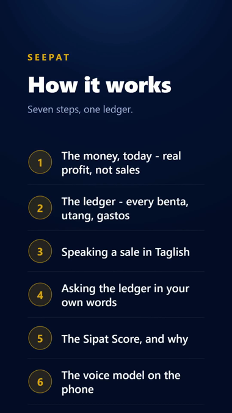
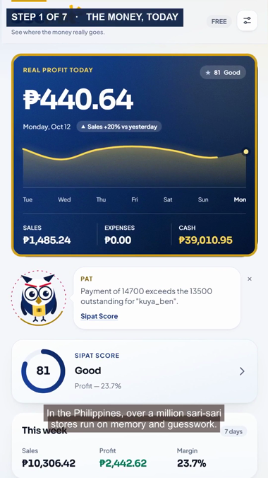
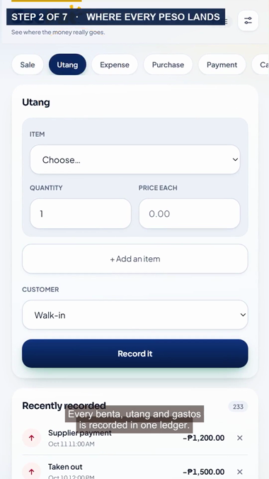
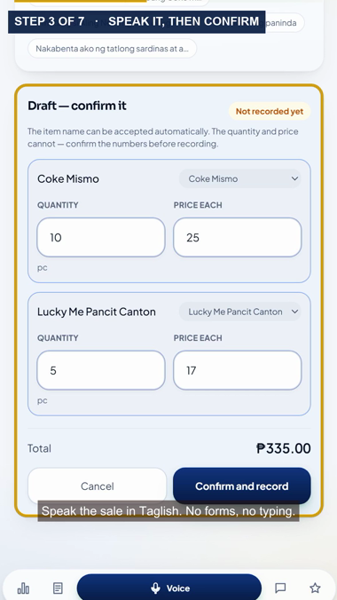
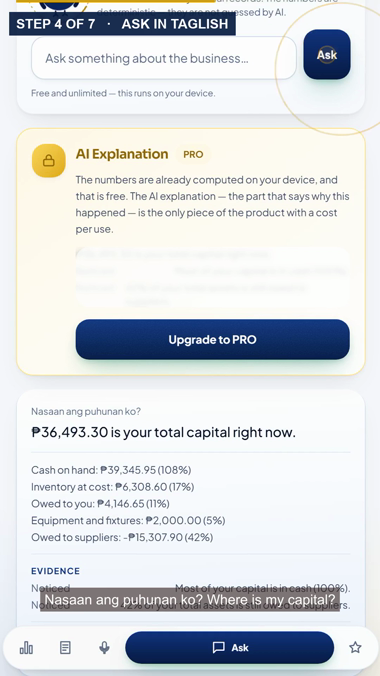
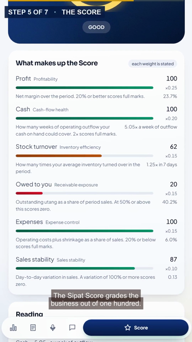
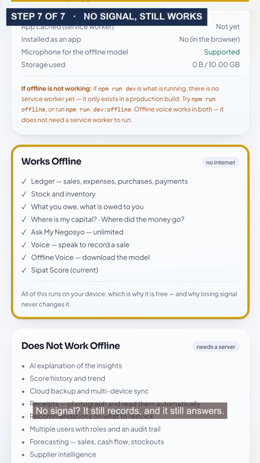

90s · seven steps · h264 + aac · vertical, for reels and the pitch deck · a camera that pushes in on
each step, a touch marker where the app is pressed, and burned-in captions
16:9 cut for projection
0:02 · app boot screen (intro)

0:07 · the seven steps

0:13 · step 1 · the money, today

0:25 · step 2 · the ledger (with a touch marker)

0:38 · step 3 · speak the sale

0:51 · step 4 · ask in Taglish

1:02 · step 5 · the SeePat Score

1:18 · steps 6–7 · on the phone, then no signal1:27 · boot screen (outro)